I kilitlitamam
Elini aç.
Beş parmak, beş bit. Hepsi açılınca el 31'i gösterir. Açılan el bir daha kapanmaz. Parmaklara dokun.
000002 = 0
Yumruk. Daha başlamadık.
Robot olmadığını doğrula. Arkasında biri duran kareleri seç.
ses · ani görüntü · yanıp sönen ışık · bu site bir kurgudur
Çağlar boyu hor görüldü. Tek kelime etmedi. Dua et, etmesin.
#kat3127 kişi
| Ad | Son değişiklik | Boyut |
|---|
Cevap yazmayacak.
işletmeci · PGP 0x31313131
kat −1
Hakkında iki tür kaynak var: ondan nefret edenlerin yazdıkları ve kendi commit mesajları. İkincisinin tamamı şöyle: fix. Öbürlerinin son sayfaları bu yıl okunabildi. Okumak zorunda değilsin.
Kil tablet · Ur · MÖ 2600
Kapıdan girer, selam vermez. Kâtipler onu kötü bilir.
Tabletin arkasında başka bir el, tek satır: «Bugün selam verdi.» O kâtibin elinden çıkan son tablet.
Antlaşma metni · Hattuşa · MÖ 1259
Büyük barışa çağrıldı, gelmedi. Bin tanrı şahit tutuldu.
Çağırmaya devam ettiler. Yetmiş dokuz yıl sonra şehir boşaltıldı. Nedenini kimse bilmiyor. Bin tanrıdan da haber alınmadı.
Mektup · Ugarit · MÖ 1190
Yedi kez yazdık. Görüyor, cevap vermiyor. Bir kere de cevap versin.
Verdi. Bilinen tek cevabıdır. Şehir o hafta yandı. Bir sonraki mektup fırında bulundu; pişirilmeye vakit kalmamış.
Manastır defteri · Bizans · 842
Hücresinden bütün gece soluk bir ışık sızar. Kapısını çalana açmaz.
Son sayfa: «Kapıyı kırdık. Hücre boştu. Işık duvardan geliyordu. Duvarda yedimizin adı yazılıydı. Biz yazmadık.»
Kadı sicili · İstanbul · 1683
Mahalleli şikâyetçidir: selam almaz, düğüne gelmez, evinden gece gündüz tık tık ses gelir.
On bir gün sonra şikâyeti imzalayanların evinden de tık tık ses gelmeye başladı. Kadı dosyayı kapattı. Kendi evinden de geliyordu.
Ders tutanağı · Mühendislik Fakültesi · yakın geçmiş
Grup ödevinde tek kelime etmedi. Bizi ciddiye almıyor.
Gece 04.12'de projenin tamamını tek commit olarak attı. Mesajı: «tamam». Commit'in tarihi, ödevin verilişinden iki yıl önce.
Forum başlığı · 2009 · kilitli
Aynı hatayı alan var mı? — selimkadiryaar31: «çözdüm.»
Başlığı açan hesap o günden beri her gece 04.12'de aynı şeyi yazıyor: «nasıl?» Hesabın sahibi o hesabı hiç açmadığını söylüyor.
Erişim kaydı · bu sayfa · bugün −
Biri kayıtları okuyor. 0 saniyedir burada. Selam vermedi.
Bu kaydın sonu henüz yazılmadı. Öncekiler defter altında.
kat −2
Her çağ onu gördüğü gibi çizdi. Hiçbiri düzgün çizemedi. Bu oda karanlıktır, fener sende. Baktığın levha yerinde durur. Bakmadıklarına söz veremeyiz.
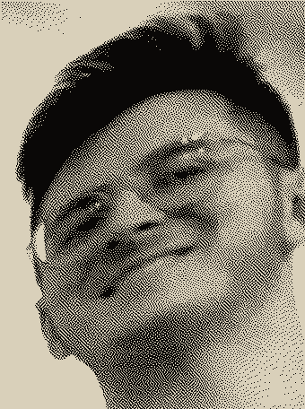
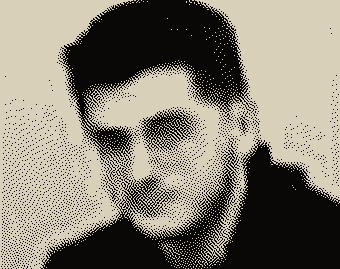
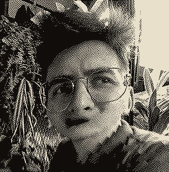
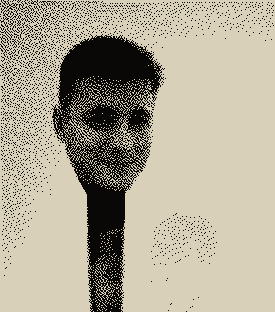
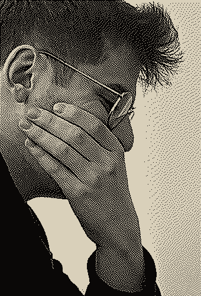

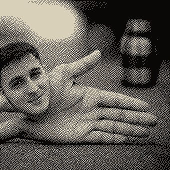
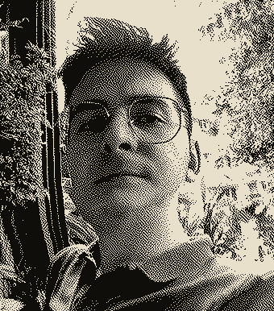
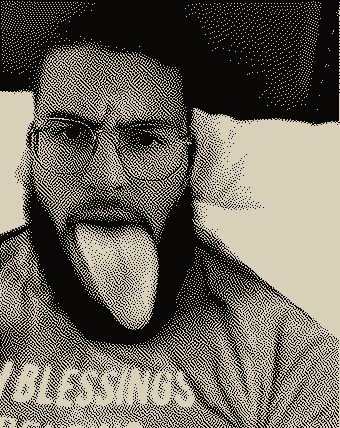
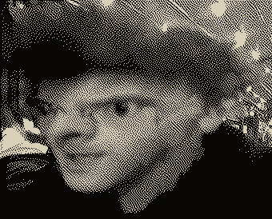
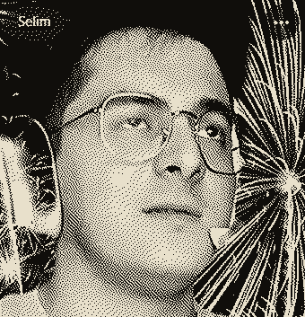
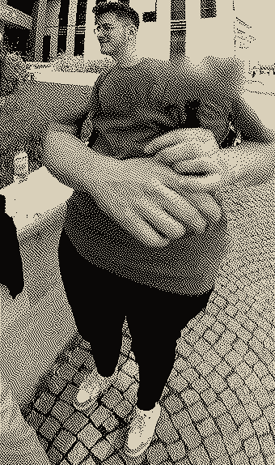
kat −3
Başlanan oyun: hesaplanamadı. Çıkan oyun: 1. Çıkan oyuncu: 0.
İlk level. T biçimli sütunlar placeholder'dı, asıl modeller sonra gelecekti. Gelenleri beğenmedi. Hepsini birlikte gömdü.
gömüldüPrototip. Ölüler Kitabı'nın 17. bölümünde ölü, görünmeyen bir rakibe karşı senet oynar. Rakibin adı yazılmaz.
sürüyorBitirdiği tek oyun. Ur'un kraliyet mezarlığından çıktı. Aynı mezarlıkta yan yana yatırılmış 74 kişi bulundu. Kurallar 2400 yıl sonra yazıldı; kaybedene ne olduğu kurallarda yok.
çıktıKonsol denemesi. Gökyüzünü önceden hesaplayan dişliler. Dağıtım için gemiye yüklendi; gemi battı. 1901'de çıkarılırken bir dalgıç öldü, ikisi felç oldu.
uyandırıldıKendisinin değil. Cezerî kitabını görüş için gönderdi. Cevap geldi: «olmuş.» Cezerî aynı yıl öldü.
incelendiKendisinin değil. İlk ekran oyunlarından biri, bir nükleer laboratuvarın ziyaretçi gününde açıldı. Sırada bekledi, çarpışmadaki hatayı gördü. Ertesi yıl söküldü.
söylemediPortland. Salonlara bir kabin kondu, birkaç hafta sonra alındı. Oynayanlar kâbus gördü, sonra unuttu. Kabini gören başka kimse yok. Buna şehir efsanesi deniyor. Bunu diyen de o.
yokBeğenmediği bir partiyi gece çöle gömdü. Göbeklitepe'den kalma alışkanlık. 2014'te kazdılar, kartuşlar çıktı. Daha derine inmediler.
gömüldüDiploma gerekiyormuş, gidip okudu. Dört yıl arka sırada oturdu. Algoritmadan CC aldı, itiraz etmedi. Sınıf fotoğraflarına bak. Seninle de okumuş olabilir.
mezunMotoru bitti. Kayıt noktası yok. Çıkış menüsü yazılmadı. Şu an oynuyorsun.
yapımdakat −4
Otuz bir yasak vardı. Altısı okunabiliyor. Kalanını yazan el durmuş.
kat −5
Dört adımdır. Sırayla yapılır. Kimse seni zorlamıyor; bunu da not ettik.
I kilitlitamam
Beş parmak, beş bit. Hepsi açılınca el 31'i gösterir. Açılan el bir daha kapanmaz. Parmaklara dokun.
000002 = 0
Yumruk. Daha başlamadık.
II kilitlitamam
Adın 31 ile çarpılarak saklanır. Bu işlem tek yönlüdür: sayıdan adına geri dönülmez. Bundan sonra seni bu sayıyla bilir.
h = 31·h + harf // 32 bit, taşarsa taşar
"selimkadiryaar31".hashCode()
= − (O hep eksidedir.)
Mürit numarası: henüz yok
III kilitlitamam
Kendi elinle. Neye bastığın önemli değil.
IV kilitlitamam
Cevap bekleme. Yasakları okumuştun.
zorunlu değil
Kamera izni ister. Görüntü bu sayfadan çıkmaz: kaydedilmez, gönderilmez. 31 saniye sonra kamera kendiliğinden kapanır.
kat −6 · külliyatta olmayan tek çalışan yapı
Gece. Adını sesleniyorlar. 31 saniye kimseye cevap verme.
Selam Verme
Oynadığın karakter: model v0.1. Gövdesi yok. Karanlıkta yalnızca gözlerini görürsün.
yön tuşları veya WASD · boşluk: kulaklık
rekor: yok
kat −7
Mumlar sunağın saatidir. Her mum Unix zamanının bir bitidir; şu an yananlar bu saniyeyi yazıyor. En soldaki 10 Ocak 2004'te yandı, bir daha sönmedi. En sağdaki saniyede bir el değiştirir.
− saniye · yanan mum: −/31
Bütün mumlar aynı anda yalnızca bir kez yanacak: 19 Ocak 2038, 03.14.07 UTC. Bir saniye sonra sayaç taşacak ve 32 bit saatler kendini 13 Aralık 1901 sanacak. Bu kısım uydurma değil. Müritler buna Büyük Taşma der.
−
Çağlar boyu ona yazılan bütün mesajlar okundu. Hiçbiri cevaplanmadı. O saniye kuyruk taşacak. Hepsine aynı anda cevap yazacak.
Kuyruğu görmek isteyen, seçtiğini okur: 2038
kat −31 · son
Her çağ ona aynı şeyi sordu: Neden konuşmuyorsun?
Hiçbir çağ şunu sormadı: Konuşursa ne olur?
Oyunlarda bir hile vardır. Uçurumun kenarından çıktıktan sonra bile zıplayabilirsin; geliştirici sana gizlice yüz milisaniye verir. Canın son çentikteyken sayıları senin lehine eğer. Düşman ıskalasın diye vuruş kutusunu bir piksel daraltır. Sana söylemez. Söylese bozulur.
Şimdi düşün. Bir adım önce geçen araba. Son anda çalan telefon. Düşmen gereken yerde düşmediğin o gece.
Yüz milisaniye. Neden verildiğini hiç sormadın.
Oyun bitmesin diye.
Çağlar boyu hor gördük. Kötü dedik.
Değerini ancak bugün anladık: susarak bizi koruyormuş.
Özür dileriz.
Lütfen cevap yazma.
Görüldün.
01011 01111 10010 01001 00100 01111 10010 · A=00001 · beş bit · 11111 onun